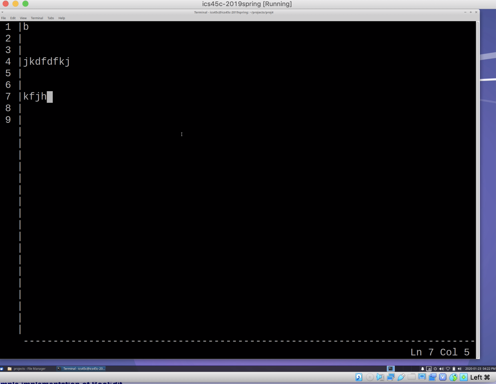
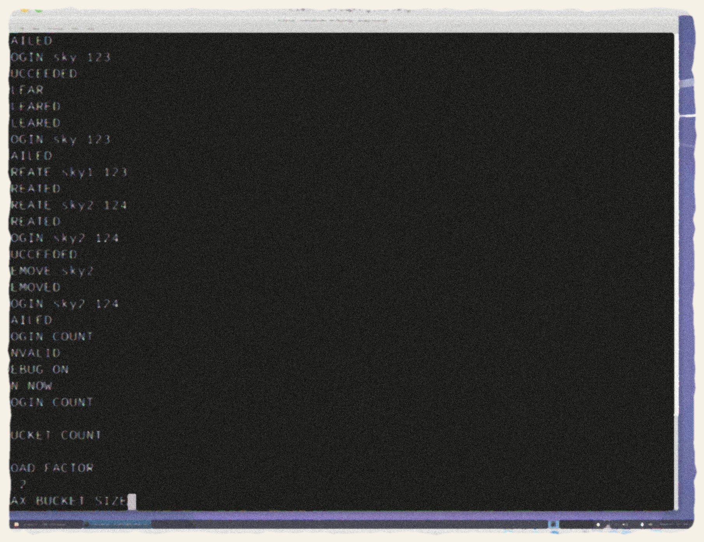
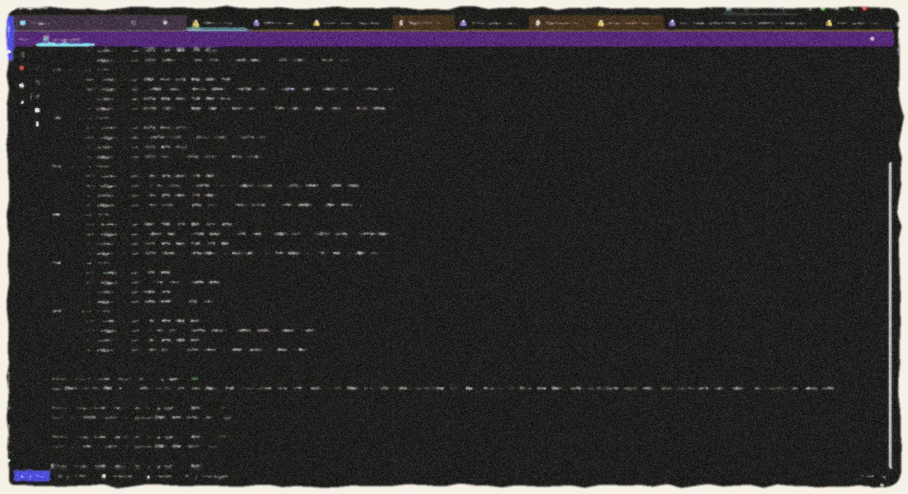
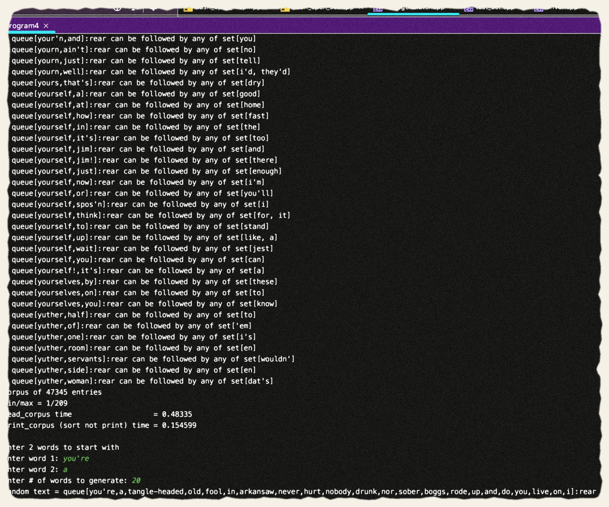

Archive · C++ Studies
Studies in C++
Four works on memory and structure — built while learning the language from its foundations up.
This room gathers the pieces I composed while learning C++: a small text editor written from scratch, and a series of data types and structures — maps, sets, equivalence classes, and graphs — designed and implemented by hand atop hash tables and the language's own primitives.

Text Editor
C++ · command pattern · undo / redo
A text editor written in C++ with the full vocabulary of the form — cursor, line, and character at your command, with undo and redo to forgive every stroke.
Watch the recording of Text Editor →
Login System
C++ · hash map · data structures
A login framework whose credentials are kept in a hash map implemented entirely by hand — the structure this exhibit is really about.
Watch the recording of Login System →
Extended Dijkstra’s Algorithm
C++ · hash graphs · shortest paths
An implementation of extended Dijkstra's algorithm built on my own hash graphs and sets. The algorithm finds the shortest paths between nodes in a graph — here, the shortest flight paths between airports.
Watch the recording of Extended Dijkstra’s Algorithm →
Data Types on Structures
C++ · linked lists · binary trees · hash tables
A suite of hand-built data types: queues, priority queues, and sets over linked lists; priority queues and maps over binary trees; maps and sets via hash tables. Pictured: the entirety of Mark Twain's The Adventures of Huckleberry Finn poured into a hash map, building a dictionary of the author's word combinations so the program learns his patterns and predicts the words he might write next.